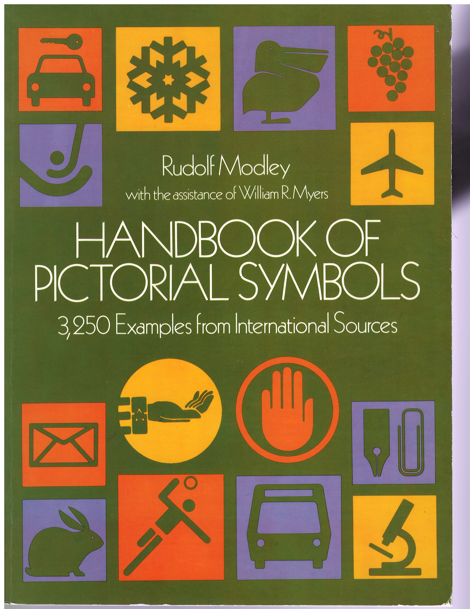
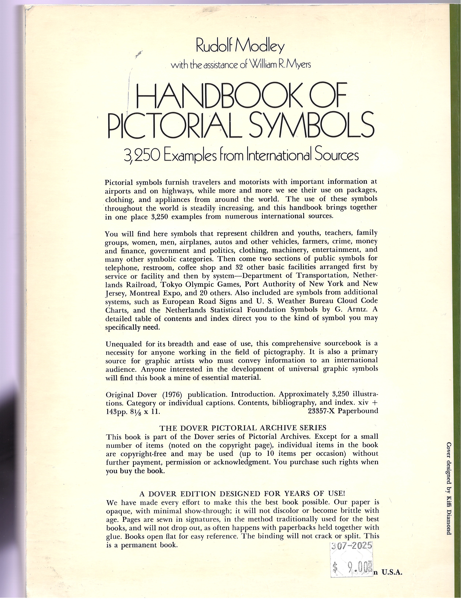

The Source Book
Dover Publications, Inc., New York, 1976. xiv + 143 pp., 8⅓ × 11.
ISBN 0-486-23357-X · Library of Congress Catalog Card Number 76-15438
Cover designed by Kiffi Diamond.
Every icon in this library is a hand-digitized (scan → crop → vector trace → name) reproduction of a pictogram printed in this book.


Copyright & Permitted Use
Transcribed from the book's copyright page:
Copyright © 1976 by Dover Publications, Inc. All rights reserved under Pan American and International Copyright Conventions. Handbook of Pictorial Symbols is a new work, first published by Dover Publications, Inc., in 1976, and belongs to the Dover Pictorial Archive Series.
Per the book's own terms: up to ten illustrations from this book, excluding the Picto’grafics symbols appearing on pages 101–109 (also scattered throughout Section III, marked by the abbreviation “Pg”), may be reproduced on any one project or in any single publication, free and without special permission, provided a credit line indicating the title of the book, author, and publisher is included. Address the publisher for permission to make more extensive use of illustrations than that.
Picto’grafics are separately copyright © 1974 by Paul Arthur, VisuCom Ltd. (permission address: Toronto M3C 2K5). The republication of the book in whole is prohibited.
Acknowledged Symbol Systems
Section IV of the book ("Arranged by System") and Section V ("Additional Systems") present the same handful
of concepts — telephone, mail, restrooms, parking, and so on — as designed independently by dozens of airports,
transit authorities, and Olympic organizing committees. Icons digitized from these sections carry the system's
code as a filename suffix (e.g. telephone-x67.svg, no-smoking-circle-adca.svg) — this
table decodes every code used throughout the library.
Section IV — Arranged by System
| Code | System |
|---|---|
ADCA | Australian Department of Civil Aviation |
ADV | German Airport Authority |
ATA | Air Transport Association |
BAA | British Airports Authority |
D/FW | Dallas–Fort Worth Airport |
DOT'74 | U.S. Department of Transportation, 1974 |
IATA | International Air Transport Association |
ICAO | International Civil Aviation Organization |
KFAI | Sweden |
LVA | Las Vegas Airport |
NPS | National Park Service |
NRR | Netherlands Railroad |
O'64 | Olympic Games, Tokyo, 1964 |
O'68 | Olympic Games, Mexico, 1968 |
O'72 | Olympic Games, Munich, 1972 |
Pg | Picto’grafics (Paul Arthur, VisuCom Ltd. — separately copyrighted, see above) |
Port | Port Authority of New York and New Jersey |
SP | Swedish Standard Recreation Symbols |
S/TA | Seattle–Tacoma Airport |
TA | Tokyo Airport |
TC | Transport Canada, Airports |
UIC | International Union of Railways |
WO'72 | Winter Olympic Games, Sapporo, 1972 |
X'67 | Expo 67, Montreal |
X'70 | Expo 70, Osaka |
Section V — Additional Systems
| System | Notes |
|---|---|
| Grenoble Winter Olympics, 1968 | Abstract op-art texture icons |
| Nova Scotia Department of Tourism | |
| European Road Signs | |
| United States Road Signs | |
| D.O.T. Hazard Labels | U.S. Department of Transportation |
| U.S. Weather Bureau: Cloud Code Charts | Not yet digitized (borderless line-art glyphs) |
Sections I and II (Part One, "Pictorial Symbols") credit two additional primary sources: the Pictograph Corporation (general pictorial symbols, pp. 3–45), and the Netherlands Statistical Foundation symbols by G. Arntz (p. 46–52).
Other Credited Contributors
From the book's introduction:
- Otto Neurath — developed the Isotype pictorial statistics system in early-1920s Vienna, foundational to the modern technique of graphic fact presentation used throughout this book.
- Gerd Arntz — designed the Netherlands Statistical Foundation symbols (Section II) and other figures credited in the introduction, working under Neurath's direction.
- Katzumie Masaru — art director for the Tokyo 1964 Olympics pictogram system, and an influential advocate of public symbols internationally.
- Cook and Shanosky — designed the U.S. Department of Transportation's Symbol Signs, prepared by the American Institute of Graphic Arts under the direction of William R. Myers, 1974.
- Henry Adams Grant and Stephen Kraft — credited for graphics/design on several statistical figures reproduced in the introduction.
Bibliography
Transcribed in full from page xi of the book:
Aéroport de Paris, Recueil de Pictogrammes Existants Correspondant a la Liste d’Informations de Base. September, 1966.
Krampen, Martin, “Signs and Symbols in Graphic Communication.” Design Quarterly, Walker Art Center, Minneapolis, 1965.
Bertin, Jacques, Sémiologie Graphique. Mouton et Gauthier-Villars, Paris, 1967.
Mead, Margaret, and Modley, Rudolf, “Communication among all People Everywhere.” Natural History, August–September, 1968.
Dreyfuss, Henry, Symbol Sourcebook. McGraw-Hill, New York, 1972.
Modley, Rudolf, How to Use Pictorial Statistics. Harper & Brothers, New York, 1937.
Glyphs, Inc., Newsletter (a quarterly, since 1971). Kent, Connecticut 06757.
Modley, Rudolf, “World Language without Words.” Journal of Communication, Autumn, 1974.
Hogben, Lancelot, From Cave Painting to Comic Strip. Chanticleer Press, New York, 1949.
Modley, Rudolf, and Lowenstein, Dyno, Pictographs and Graphs. Harper & Brothers, New York, 1952.
Icographic. A quarterly review published by ICOGRADA (International Council of Graphic Design Associations). The Council also has a Commission on International Signs and Symbols. Address is 7 Templeton Court, Radnor Walk, Shirley, Croydon CR0 7 N2, England.
Neurath, Otto, International Picture Language. Basic English Publishing Company, London, no date (about 1937).
ISO (International Organization for Standardization), Technical Committee 145, Subcommittee 1, Public Symbols. The Secretariat for this Subcommittee is the Austrian Standards Institute, Postfach 130, A-1021 Wien, Austria.
Neurath, Otto, Basic by Isotype. Basic English Publishing Company, London, 1948.
Kepes, Gyorgy (ed.), Sign, Image, Symbol. Braziller, New York, 1966.
Shepherd, Walter, Shepherd’s Glossary of Graphic Signs and Symbols. Dover Publications, Inc., New York, 1971.
Koberstein, Herbert, Wiener Methode der Bildstatistik, etc. Bremen, 1969.
U. S. Department of Transportation, Symbol Signs. National Technical Information Service, Springfield, Virginia, 1974.
Koberstein, Herbert, Statistik in Bildern (Statistics in Pictures). Poesche, Stuttgart, 1973.
Whitney, Elwood (ed.), Symbology. Hastings House, New York, 1960.
This Digitization
The scan → crop → vectorize → name pipeline, integrity verification, and this library browser are
maintained in a private working repository. This public repo (pictorial-symbols-icons) is the
published deliverable, synced from that pipeline's output/ folder.